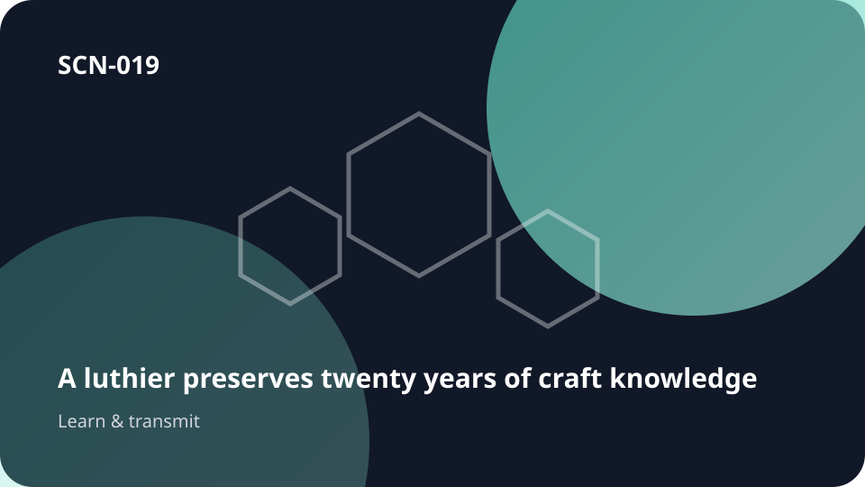

Part deUn savoir qui doit être transmis

SCN-019 · Apprendre et transmettre
Transformer les récits en cas navigables reliés aux conditions et aux conséquences
Les décisions les plus difficiles d’un pilote sur le départ ne survivent que comme récits où règle et intuition se confondent. Koali en fait des choix explorables avec conditions et conséquences, pour transmettre du jugement utilisable plutôt que du folklore.
ExempleAvant le départ du pilote, capter ce qu’aucun manuel ne sait
← Retour à la mosaïque complèteCe qui se perd sans continuité
Règles et intuition se confondent lorsque les décisions de vol rares ne survivent que comme anecdotes de retraite.
Chemin système
Konnaxion → KonnectED → KnowledgeKristalUCKK
Comment ça circule
cas vécu → conditions → décision → résultat → principe → limites → enseignement
Aussi utile pouraviation · médecine · terrain